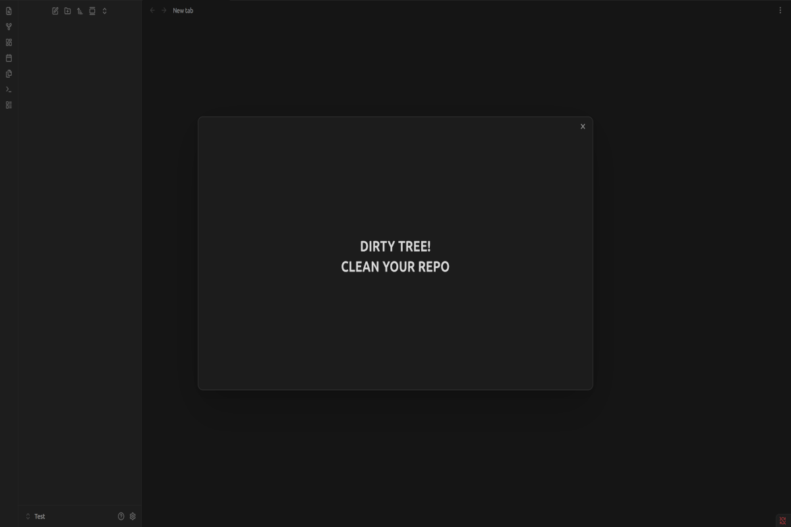

Obsidian plugin · by Top Tier Content
Dirty Tree Warning
A large, hard-to-miss warning when you quit Obsidian with uncommitted Git changes in your vault.

What it does
If your vault is a Git repository, the plugin checks the Git working tree when you close Obsidian.
- Uncommitted changes: a large message appears, reading DIRTY TREE! CLEAN YOUR REPO. Obsidian then finishes closing on its own a few seconds later.
- Clean working tree, or a vault that isn't in a Git repository: Obsidian closes normally, and nothing is shown.
The warning follows your active Obsidian theme. It's a reminder, not a lock: it doesn't stop Obsidian from closing.
Commands
Open the command palette and search for Dirty Tree Warning.
| Command | What it does |
|---|---|
| Preview warning | Shows the warning without closing Obsidian. Press Esc to dismiss it. |
| Check working tree now | Shows a short notice saying whether the working tree is clean or has uncommitted changes. |
No hotkeys are set; you can assign your own in Settings → Hotkeys.
Requirements
- Obsidian on desktop (Windows, macOS or Linux). Mobile isn't supported.
- Git installed and available as
giton your system path. - A vault that is inside a Git repository.
Files ignored by your .gitignore don't count as changes. To keep Obsidian's own settings folder from triggering the warning, add .obsidian/ to your .gitignore.
Disclosures
- Runs a local program:
git status --porcelainin your vault folder, when you close Obsidian and when you use Check working tree now. - Reads files outside the vault: Git may read repository data (the
.gitfolder) outside the vault, for example when the vault is a subfolder of a larger repository. - No network access, and it never modifies, stages or commits files.
- Desktop only.
Installation
In Obsidian: Settings → Community plugins → Browse, search for Dirty Tree Warning, then select Install and Enable.
Support and maintenance
This plugin is provided as is. It works for its author, and it's shared in the hope that it's useful to others.
- No support is offered, and there's no way to contact the author about it.
- No updates or fixes are planned.
- Issues and contributions aren't accepted.
If it doesn't work for you, or you'd like it to behave differently, you're welcome to modify it under the terms of the license.
License
Copyright © 2026 Top Tier Content. Released under the GNU General Public License, version 3 or (at your option) any later version (GPL-3.0-or-later).
You may use, study, modify and share it. If you distribute a modified version, keep the copyright notice and credit Top Tier Content as the original author, as the license requires. It comes with no warranty.
Source code: github.com/Top-Tier-Content/dirty-tree-warning